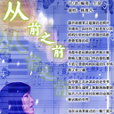

|  | 从前之前 |
Before Long Before (instrumental) |
| 风琴晚钟 |
Accordion Night (instrumental) |
|
| 易安小调 |
Yian Ditty |
|
| 影子杀 |
The Dark Templar |
|
| 祁山谣 |
Qishan Ditty (symphonic) |
|
| 2009之交响诗 |
Symphonic Poem 2009 |
|
| 听雨轩 |
Rain Pavilion |
|
| 昙花恋 |
Epiphyllum (instrumental) |
|
| 特洛伊圆舞曲 |
Troy Waltz (instrumental) |
|
| 情人的心意 |
Lover's Gift (instrumental) |
|
| 何以 |
He Yi |
|
| 神装一格格——毕业季致孔庆轩 |
歌词PDF | |
| 写在王子剑童鞋20岁生日 |
歌词PDF | |
 |
《琴石鸣乐》文档 | The document of my album |